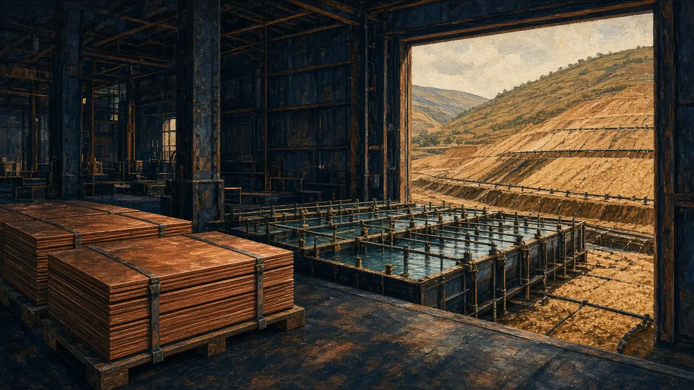
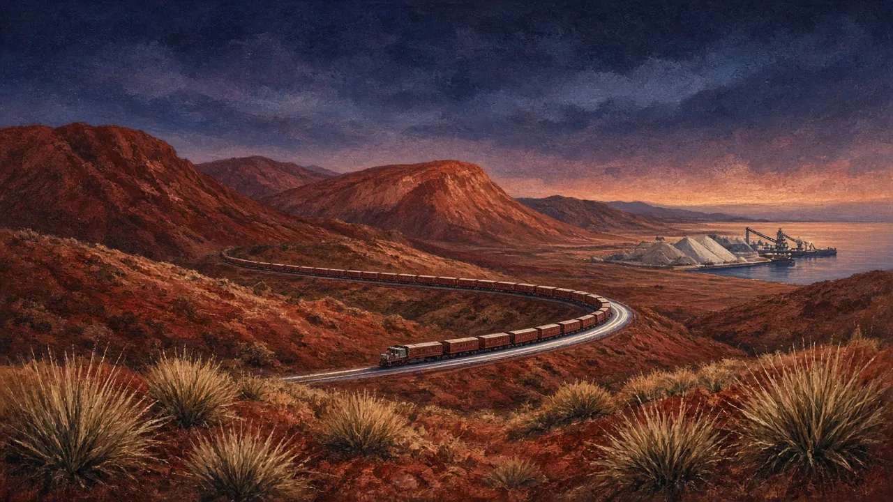

By the end you can…
- Explain the supply and demand drivers and the price-setting mechanism for gold, copper, lithium and iron ore
- Identify which price series (benchmark, spot, contract, grade basis) applies to a given company
- Use the commodity one-pagers to brief yourself on any other commodity in 15 minutes
How to study a commodity
For every commodity, answer the same six questions:
- Where is it priced? (exchange, benchmark, contract, private negotiation)
- What specification? (grade, form, delivery point)
- Who supplies it? (concentration by country and company; cost curve)
- Who consumes it, and for what? (end uses and their growth)
- What are the swing factors? (China, energy transition, disruptions, policy)
- How do equities trade against it? (leverage, stage, jurisdiction)
The commodity one-pagers in the library answer these for 13 commodities. This module goes deep on gold, then covers copper, lithium and iron ore.
Gold (deep dive)
Gold is the ASX's largest sector by number of companies. It is a monetary metal as much as an industrial one: jewellery, central banks, investment (bars, coins, ETFs) and a little technology.
- Pricing: a 24-hour OTC market centred in London (the LBMA auctions) and COMEX futures. Spot is quoted in US$/oz. The Perth Mint quotes A$ prices.
- Supply: about 3,500–3,700 t/yr from mines plus recycling unverified. No single country dominates. Australia is one of the top producers.
- Demand drivers: real rates, the US dollar, central-bank buying, ETF flows, Asian jewellery and fear.
- Price as of 29 Oct 2026: ≈US$4,040–4,070/oz, ≈A$5,730–5,780/oz (Perth Mint) ✔. That is about 28% below the 29 Jan 2026 intraday record of ≈US$5,595 ✔.
◆ Key ideaHow gold equities trade
- Producers trade on A$ margin, reserve life and cost delivery.
- Developers trade on funding and timeline; gold-price rallies widen their NPV but also attract bidders.
- Explorers need the gold price and risk appetite. They lag producers in the early stage of a rally and outperform late, when the market searches for the next discovery.
Copper
- Pricing: LME, COMEX and SHFE. Concentrate is sold on payables and TC/RCs (Module 8).
- Supply: dominated by large porphyry mines in Chile, Peru, the DRC (sediment-hosted) and Indonesia. New supply is slow, because large discoveries are rare and lead times long.
- Demand: construction, the grid, EVs (several times more copper per vehicle than an internal-combustion car unverified), electronics and data centres.
- Recent disruptions: Cobre Panamá, about 1–1.5% of world supply, saw its contract ruled unconstitutional on 28 Nov 2023 ✔. Kakula's seismic event (May 2025) and the Grasberg mud rush (Sep 2025) ✔ followed. The 2026 TC/RC benchmark fell to zero as smelters fought for concentrate ✔.
- Price: LME cash US$14,675.50/t on 28 Oct 2026; the range in October was ≈US$14,335–14,822 ✔.

Lithium
- Pricing: there is no deep futures market. Prices are assessed by reporting agencies (Fastmarkets, Benchmark, SMM) and set in contracts. Always grade-normalise (SC6 vs SC5.x, CIF vs FOB, carbonate vs hydroxide).
- Supply: Australian hard-rock spodumene (Greenbushes, Pilgangoora, Kathleen Valley, Mt Holland) and South American brines, with growing African and Chinese lepidolite supply. Most processing into chemicals happens in China.
- Demand: EV and storage batteries.
- The cycle: a dramatic boom (2021–22) and bust (2023–25). It produced suspensions (Core Lithium, Jan 2024 ✔), care and maintenance (PLS's Ngungaju, announced 29 Oct 2024 and effective 1 Dec 2024 ✔) and failed bids followed by heavily diluted raises (Liontown, Oct 2023 ✔).
- Price as of Oct 2026: SC6 ≈ US$2,250/t FOB ✔.

Iron ore
- Pricing: the 62% Fe fines index (CFR China) plus grade, lump and impurity adjustments. SGX futures and Dalian contracts give price discovery.
- Supply: the Pilbara majors (BHP, Rio Tinto, Fortescue) and Vale in Brazil dominate seaborne supply. Simandou in Guinea began production on 11 Nov 2025 ✔, adding high-grade supply over the coming years.
- Demand: Chinese steel, hence property and infrastructure (Module 12).
- Quality premia: higher-grade ore (>65% Fe) earns a premium as steelmakers decarbonise. Low-grade and high-impurity ore is discounted.

Go deeper: The other commodities optional
Brief yourself just in time with the library one-pagers:
| Commodity | One-liner | Key fact |
|---|---|---|
| Nickel | Indonesian NPI and matte crushed prices | BHP's Nickel West suspended since Oct 2024; review by Feb 2027 ✔ |
| Uranium | Term contracts, thin spot market | Langer Heinrich commercial production 30 Mar 2024 ✔ |
| Coal | Metallurgical vs thermal | Whitehaven bought Blackwater and Daunia (up to US$4.1bn, completed 2 Apr 2024) ✔ |
| Rare earths | Separation and magnets; China dominates | Lynas began dysprosium production in May 2025 ✔ |
| Silver | Half monetary, half industrial (solar) | Mostly a by-product |
| Zinc | Galvanising steel | High TCs; VMS and SEDEX deposits |
| Mineral sands | Zircon, rutile, ilmenite | Pigment and ceramics demand |
| PGMs | Autocatalysts | South Africa and Russia dominate |
| Graphite | Battery anodes | China dominates processing |
✦ Hemi dossierPage 11: Gold market context for Hemi
- DFS: A$2,700/oz (2023). Spot: ≈A$5,750 as of 29 Oct 2026. Peak: ≈US$5,595 intraday (Jan 2026).
- Standalone developers often must hedge as a condition of project debt. Under NST, funding comes from the group balance sheet, so project-level hedging is a group policy choice, not a lender demand unverified.
- Market lesson: NST's ≈A$5bn bid (Dec 2024) came when A$ gold was much lower than today. Gold's subsequent rally made the price look cheaper, but buyers pay in scrip, and NST shares rose with gold.
⚑ Red flagCommodity red flags
- Lithium prices compared across grades or delivery terms without normalising
- "Battery metals" narratives with no offtake or specification testwork
- Valuations assuming spot prices persist for the life of the mine
- Ignoring the quality premiums and discounts in iron ore and coal
Practice tasks
Checkpoint quiz
Score 80% or more to mark this module mastered. Your best score is saved in this browser.